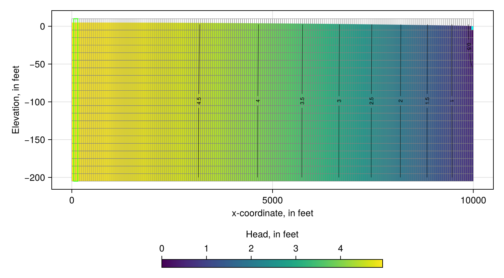
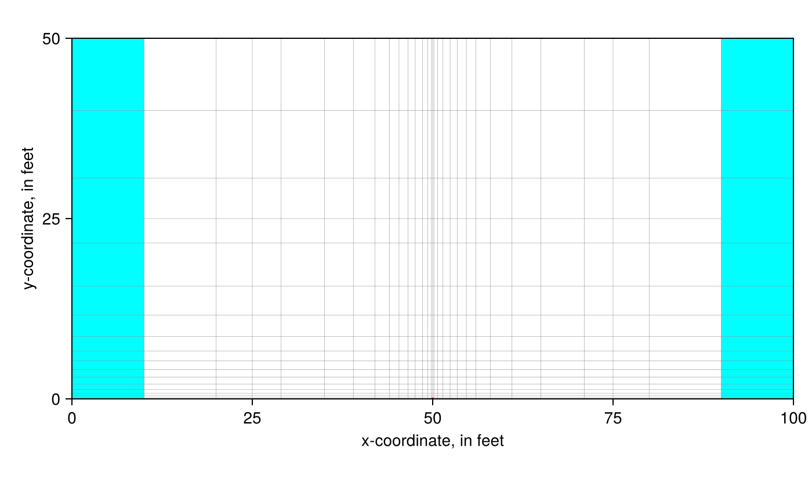
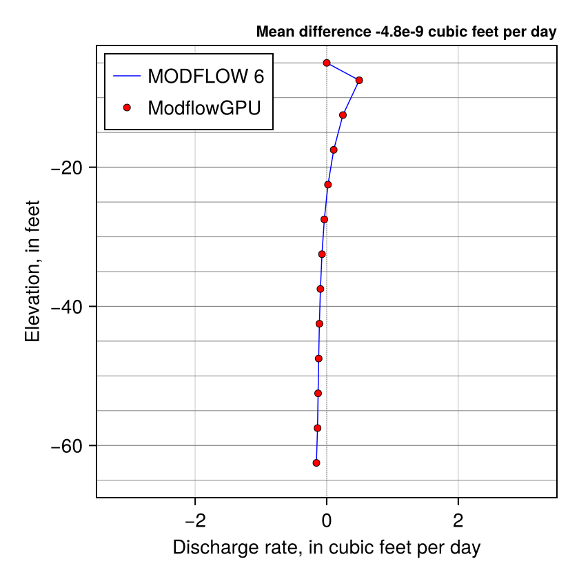
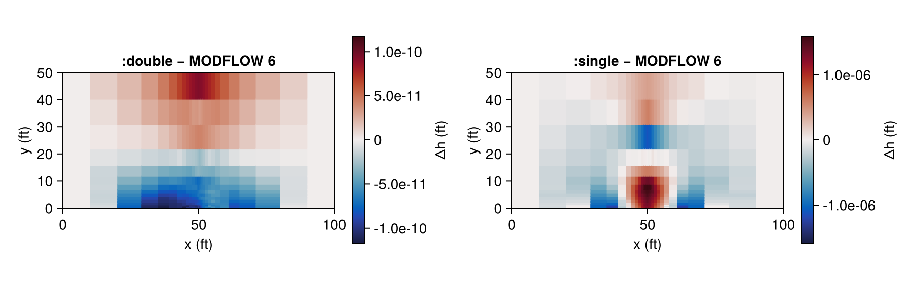

A well screened across several layers
The multi-aquifer well problem of Reilly and others (1989): a well screened from 5 ft to 70 ft below a water table, in an aquifer with regional flow, where water enters the well in the upper part of the screen and leaves it in the lower part. The MODFLOW 6 example ex-gwf-maw-p03 has three models. Units are feet and days.
ex-gwf-maw-p03a, the regional model: a cross-section of 21 layers of 200 columns of 50 ft, with recharge and a constant head of 0 ft at its east end. Its heads give the boundary heads of the local models.ex-gwf-maw-p03b, the local model with the well as a multi-aquifer well (MAW package): not supported by ModflowGPU (the MAW package is out of scope, see Supported packages).ex-gwf-maw-p03c, the same local model (41 layers of 16 × 27 cells, half of the well's surroundings, as the model is symmetric) with the well as a column of cells of very high hydraulic conductivity (10⁹ ft/d).
This page runs ex-gwf-maw-p03a and ex-gwf-maw-p03c.
Input and the MODFLOW 6 runs
ExampleTools (docs/ExampleTools.jl in the repository) takes the input from the released mf6examples.zip, sets the tight closures of the parity tests in the IMS file, and runs MODFLOW 6.8.2. With the absolute residual criterion of the tight closures MODFLOW 6 does not converge on ex-gwf-maw-p03c (the high conductivity of the well cells), so its run uses the relative criterion (tight-relative), as the reference run of the parity tests does.
using ModflowGPU, CairoMakie
using Printf: @sprintf
mf6 = Dict("ex-gwf-maw-p03a" => example_run("ex-gwf-maw-p03a"), "ex-gwf-maw-p03c" => example_run("ex-gwf-maw-p03c"; mode = "tight-relative"))
[(name, m.mode, m.mf6_time) for (name, m) in mf6]2-element Vector{Tuple{String, String, Float64}}:
("ex-gwf-maw-p03c", "tight-relative", 0.122233938)
("ex-gwf-maw-p03a", "tight", 1.54827301)The ModflowGPU runs
In :double and in :single precision on the CPU, with the default options.
runs = Dict((name, p) => run_modflowgpu(mf6[name].dir, p) for name in keys(mf6) for p in (:double, :single))
all(r.result.converged for r in values(runs))trueThe regional model
The heads of the regional cross-section (the saturated part of each cell coloured by its head), with contours every 0.5 ft, the constant-head cells (cyan) and the extent of the local models (green), as in the MF6 example.
name = "ex-gwf-maw-p03a"
g = read_dis_grid(mf6[name].dir)
r = runs[(name, :double)].result
h = read_head(open_head_file(r.head_file), 1)
chd = [cell_of(g, n) for n in input_nodes(mf6[name].dir, "CHD")]
rects, values = Rect2f[], Float64[]
for c in 1:g.ncol, l in 1:g.nlay
local t = l == 1 ? g.top[c, 1] : g.botm[c, 1, l - 1]
local b, v = g.botm[c, 1, l], h[c, 1, l]
if abs(v) < 1.0e30 && v > b
push!(rects, Rect2f(g.xe[c], b, g.delr[c], min(v, t) - b))
push!(values, v)
end
end
fig = Figure(; size = (760, 420))
ax = Axis(fig[1, 1]; xlabel = "x-coordinate, in feet", ylabel = "Elevation, in feet")
pl = poly!(ax, rects; color = values, colormap = :viridis)
poly!(ax, [Rect2f(g.xe[c], g.botm[c, 1, l], g.delr[c], (l == 1 ? min(h[c, 1, l], g.top[c, 1]) : g.botm[c, 1, l - 1]) - g.botm[c, 1, l]) for (l, _, c) in chd]; color = :cyan)
section_grid!(ax, g; row = 1, color = RGBf(0.5, 0.5, 0.5))
section_contour!(ax, g, mask_inactive(h); row = 1, levels = 0:0.5:5.5, color = :black, linewidth = 0.5, labels = true, labelsize = 8)
lines!(ax, [50, 150, 150, 50, 50], [10, 10, -205, -205, 10]; color = RGBf(0.22, 1.0, 0.08), linewidth = 1.25)
Colorbar(fig[2, 1], pl; vertical = false, label = "Head, in feet", width = Relative(0.5))
save_figure(fig, "ex-gwf-maw-p03-regional-grid")
The local model with a high-conductivity well
The water table (layer 1) of ex-gwf-maw-p03c with contours, the constant-head cells (cyan) and the well cell (red, at the bottom edge, which is the symmetry plane of the model). The MF6 example draws this map for the MAW model (-p03b). In the released input (mf6examples.zip) the constant heads of the local models are all 10 ft, the starting head of the regional model, instead of the regional heads of 4 to 5 ft that the figures of the MF6 documentation were made with; so the heads here vary by less than a thousandth of a foot, and the flows below are smaller than in the MF6 figures.
name = "ex-gwf-maw-p03c"
g = read_dis_grid(mf6[name].dir)
r = runs[(name, :double)].result
h = read_head(open_head_file(r.head_file), 1)
chd = [cell_of(g, n) for n in input_nodes(mf6[name].dir, "CHD")]
well = (16, 14) # row, column of the well (layers 2 to 13)
fig = Figure(; size = (700, 420))
ax = Axis(fig[1, 1]; aspect = DataAspect(), xlabel = "x-coordinate, in feet", ylabel = "y-coordinate, in feet", xticks = 0:25:100, yticks = 0:25:50)
map_cells!(ax, g, filter(c -> c[1] == 1, chd); color = :cyan)
map_grid!(ax, g; color = RGBf(0.5, 0.5, 0.5), linewidth = 0.25)
wt = layer_values(h, 1)
map_contour!(ax, g, wt; levels = range(extrema(filter(!isnan, wt))...; length = 9)[2:(end - 1)], color = :black, linewidth = 0.5, labels = true, labelsize = 7, labelformatter = v -> [@sprintf("%.4f", x) for x in v])
map_cells!(ax, g, [well]; color = :red)
limits!(ax, extrema(g.xe)..., extrema(g.ye)...)
save_figure(fig, "ex-gwf-maw-p03-local-grid")
The flow between the well cells and the aquifer per elevation, from the FLOW-JA-FACE record (twice the flow of the half model, as in the MF6 example: positive into the well): ModflowGPU against MODFLOW 6 on the same input. The MF6 example compares the high-conductivity well with the multi-aquifer well of -p03b instead.
function well_flows(g, cbc)
flowja = vec(only(read_budget(open_budget_file(cbc); text = "FLOW-JA-FACE")))
function flow(a, b) # twice the flow into cell `a` from cell `b`
n, m = node(g, a...), node(g, b...)
r = g.ia[n]:(g.ia[n + 1] - 1)
return 2 * flowja[r[findfirst(i -> g.ja[i] == m, r)]]
end
i, j = well
z, q = [g.botm[j, i, 1]], [flow((2, i, j), (1, i, j))] # from layer 1, at its bottom
for l in 2:13
push!(z, (g.botm[j, i, l - 1] + g.botm[j, i, l]) / 2)
push!(q, sum(flow((l, i, j), nb) for nb in ((l, i, j - 1), (l, i - 1, j), (l, i, j + 1))))
end
return z, q
end
z, q = well_flows(g, r.budget_file)
z6, q6 = well_flows(g, only(filter(endswith(".cbc"), readdir(mf6[name].dir; join = true))))
fig = Figure(; size = (420, 420))
ax = Axis(fig[1, 1]; xlabel = "Discharge rate, in cubic feet per day", ylabel = "Elevation, in feet", title = "Mean difference $(round(sum(q .- q6) / length(q); sigdigits = 2)) cubic feet per day", titlesize = 11, titlealign = :right)
vlines!(ax, 0; color = RGBf(0.5, 0.5, 0.5), linestyle = :dot, linewidth = 0.5)
hlines!(ax, -5:-5:-65; color = RGBf(0.5, 0.5, 0.5), linewidth = 0.5)
lines!(ax, q6, z6; color = :blue, linewidth = 0.75, label = "MODFLOW 6")
scatter!(ax, q, z; color = :red, strokecolor = :black, strokewidth = 0.5, markersize = 7, label = "ModflowGPU")
limits!(ax, -3.5, 3.5, -67.5, -2.5)
axislegend(ax; position = :lt)
save_figure(fig, "ex-gwf-maw-p03-01")
Comparison with MODFLOW 6
The head differences between ModflowGPU and MODFLOW 6 in layer 1 of the local model, in both precisions.
h6 = read_head(open_head_file(only(filter(endswith(".hds"), readdir(mf6[name].dir; join = true)))), 1)
d = [":$p − MODFLOW 6" => read_head(open_head_file(runs[(name, p)].result.head_file), 1) .- h6 for p in (:double, :single)]
save_figure(difference_map(g, d; unit = "ft", xlabel = "x (ft)", ylabel = "y (ft)", size = (900, 300)), "ex-gwf-maw-p03-difference")
The largest head and budget differences, next to the values of the parity table, and the wall times (CPU: this build, including compilation for the first run of the session; GPU: the parity table, AMD Radeon RX 7800 XT). First the regional model, then the local one. For ex-gwf-maw-p03c in :single the parity tests compare the budget beyond the Float32 rounding of the cell flows (the well cells carry large flows), so the parity table shows that bound; the table here shows the raw difference (about 6 × 10⁻³ of the total inflow), which must stay below 10⁻².
stats(name) = Dict(p => (; cmp = compare_with_mf6(mf6[name].dir, runs[(name, p)]), runs[(name, p)].time) for p in (:double, :single))
comparison_table("ex-gwf-maw-p03a", stats("ex-gwf-maw-p03a"); unit = "ft")| Preset | max |Δh| (ft), this build | max |Δh| (ft), parity table | Budget, this build | Budget, parity table | CPU time, this build (s) | GPU time, parity table (s) |
|---|---|---|---|---|---|---|
:double | 2.8e-08 | 2.8e-08 | 0 | 0 | 0.29 | 0.10 |
:single | 3.7e-05 | 3.7e-05 | 4.4e-06 | 4.4e-06 | 1.23 | 0.46 |
Budget: the largest difference of a budget-file flow or a listing-table rate, relative to the total inflow of its time step.
comparison_table("ex-gwf-maw-p03c", stats("ex-gwf-maw-p03c"); unit = "ft", budget_limit_single = 1.0e-2)| Preset | max |Δh| (ft), this build | max |Δh| (ft), parity table | Budget, this build | Budget, parity table | CPU time, this build (s) | GPU time, parity table (s) |
|---|---|---|---|---|---|---|
:double | 1.7e-09 | 1.7e-09 | 9.7e-08 | 9.7e-08 | 1.36 | 0.03 |
:single | 7.8e-06 | 7.8e-06 | 6.1e-03 | 7.7e-05 | 1.32 | 0.40 |
Budget: the largest difference of a budget-file flow or a listing-table rate, relative to the total inflow of its time step.